ORIGINAL PAGES
原書逐頁 32 個跨頁
《2026 寶嚴禪寺總體規劃書》原書圖檔
本頁為原書影像檔。規劃書之文字版內容，請參閱首頁規劃導覽。點任一頁可開啟原尺寸大圖。
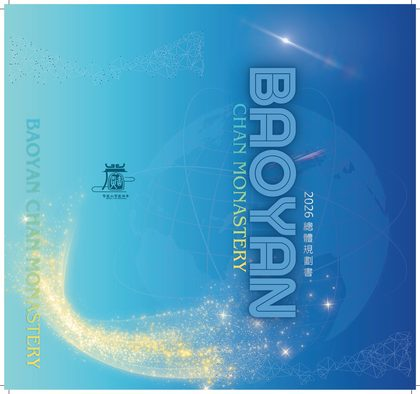
第 1 跨頁 · 封面跨頁
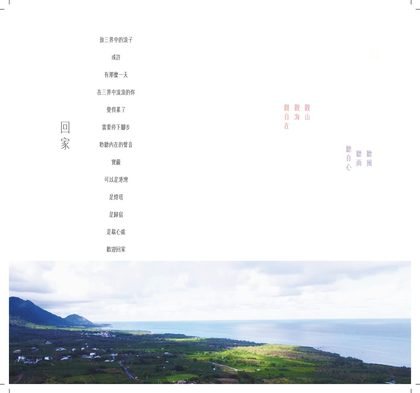
第 2 跨頁 · 回家 — 致三界中的浪子
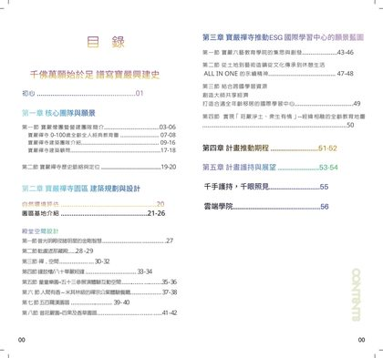
第 3 跨頁 · 目錄
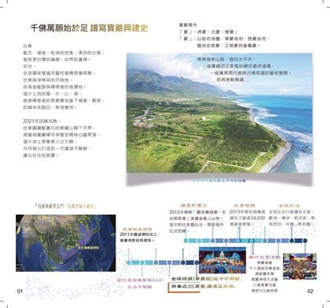
第 4 跨頁 · 原書 p.1–2 · 千佛萬願始於足 譜寫寶嚴興建史
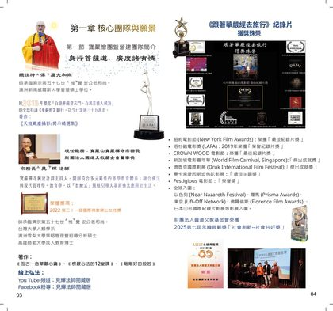
第 5 跨頁 · 原書 p.3–4 · 第一章 核心團隊與願景／第一節 寶嚴僧團暨營建團隊簡介
第 6 跨頁 · 原書 p.5–6 · 寶嚴僧團
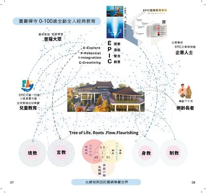
第 7 跨頁 · 原書 p.7–8 · 寶嚴禪寺 0-100歲全齡全人經典教育
第 8 跨頁 · 原書 p.9–10 · 建築團隊／獲獎
第 9 跨頁 · 原書 p.11–12 · 建築是文化世界的模型
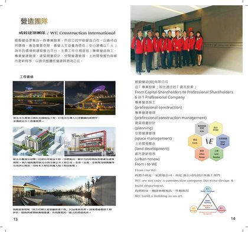
第 10 跨頁 · 原書 p.13–14 · 營造團隊 威毅建築團隊
第 11 跨頁 · 原書 p.15–16 · 台東寶嚴禪寺題辭／都蘭山脈基地
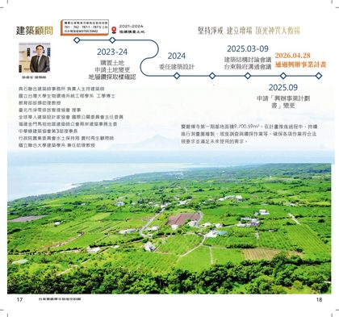
第 12 跨頁 · 原書 p.17–18 · 建築顧問
第 13 跨頁 · 原書 p.19–20 · 第二節 寶嚴禪寺歷史脈絡與定位／第二章 寶嚴禪寺園區建築規畫與設計
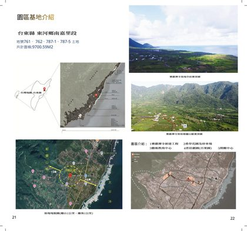
第 14 跨頁 · 原書 p.21–22 · 園區基地介紹
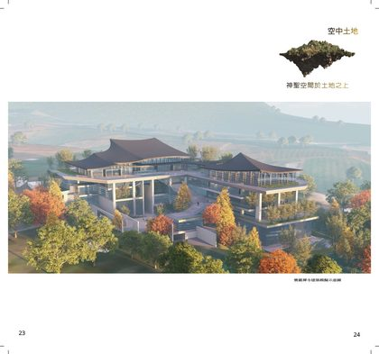
第 15 跨頁 · 原書 p.23–24 · 空中土地
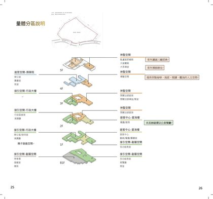
第 16 跨頁 · 原書 p.25–26 · 量體分區說明
第 17 跨頁 · 原書 p.27–28 · 殿堂空間設計 第一節 普光明殿
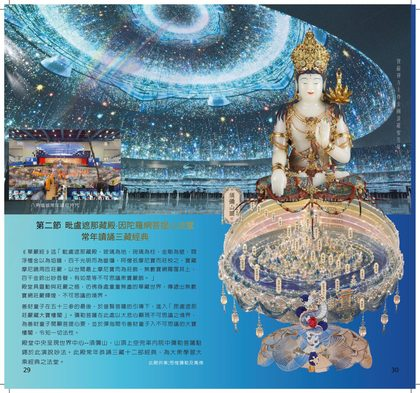
第 18 跨頁 · 原書 p.29–30 · 第二節 毗盧遮那藏殿
第 19 跨頁 · 原書 p.31–32 · 第三節 禪‧空間
第 20 跨頁 · 原書 p.33–34 · 第四節 鐘鼓樓與八十華嚴經鐘
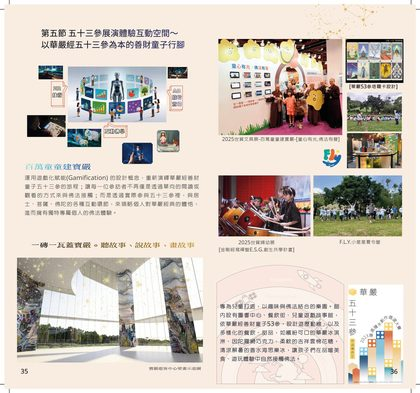
第 21 跨頁 · 原書 p.35–36 · 第五節 五十三參展演體驗互動空間
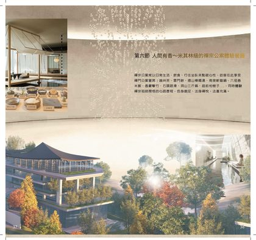
第 22 跨頁 · 原書 p.37–38 · 第六節 人間有香 禪宗公案體驗餐廳
第 23 跨頁 · 原書 p.39–40 · 第七節 五百羅漢園區
第 24 跨頁 · 原書 p.41–42 · 第八節 普莊嚴園
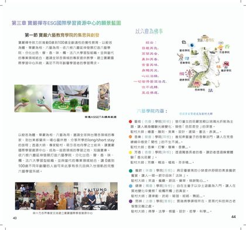
第 25 跨頁 · 原書 p.43–44 · 第三章 寶嚴禪寺ESG國際學習資源中心的願景藍圖／第一節 寶嚴六藝教育學院的集思與創發
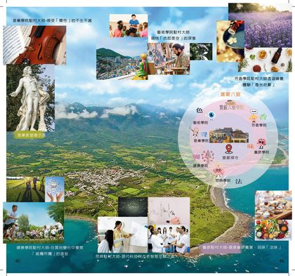
第 26 跨頁 · 原書 p.45–46 · 寶嚴六藝學院
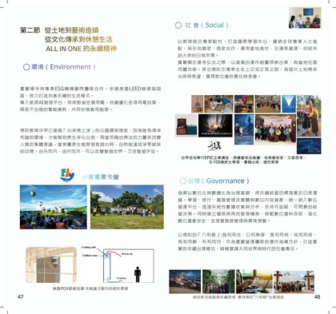
第 27 跨頁 · 原書 p.47–48 · 第二節 從土地到藝術造鎮／ALL IN ONE 的永續精神
第 28 跨頁 · 原書 p.49–50 · 第三節 結合跨國學習資源 打造國際學習中心
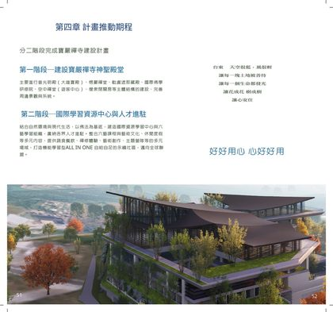
第 29 跨頁 · 原書 p.51–52 · 第四章 計畫推動期程
第 30 跨頁 · 原書 p.53–54 · 第五章 千秋志業 萬世功德
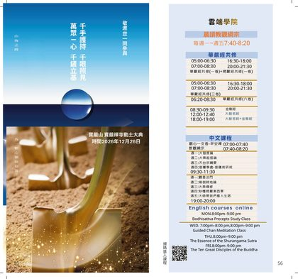
第 31 跨頁 · 原書 p.55–56 · 動土大典邀請／雲端學院課程表
第 32 跨頁 · 原書 p.57–58 · 匯款帳號／各地分院聯絡處 · 本跨頁為《總體規劃書》0707 版原書印製內容；最新護持管道請見首頁護持專區。